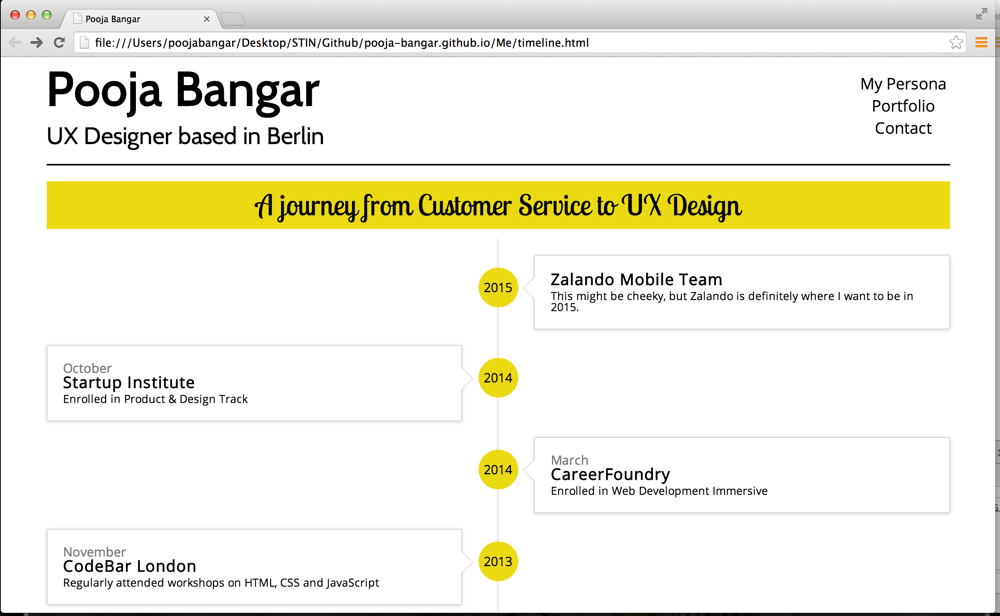

October
October
September
May
November
May
January
June
November
March
October
After speaking with you at Cafe 9, I realised that I really needed to demonstrate that I understand what your looking for and how I can add value to your team. With these objectives in mind, I investigated ways that I could do this. The first part is my exploration of the Zalando mobile app and my ideas on how to add value for the customer. For the second part I realised there was only one way forward, identifying my "User" needs...
A team member that
A timeline that displays
I began by deciding on the information that needed to be displayed and by sketching out an initial idea. Once this had been done, I dived straight into coding the timeline. The initial design showed the chronology starting with my most recent experience and working backwards. Each experience had a badge showing the year, and was displayed alternately on each side of the timeline.

After consulting with my User Panel (family and friends) it became apparent that the chronolgy should start at the beginning of my Customer Service experience, mirroring the title. I also realised that grouping experiences by year and alternating according to this would make the design clearer. These changes lead to the final iteration above.